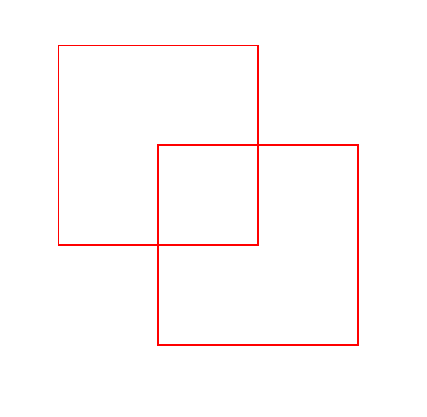
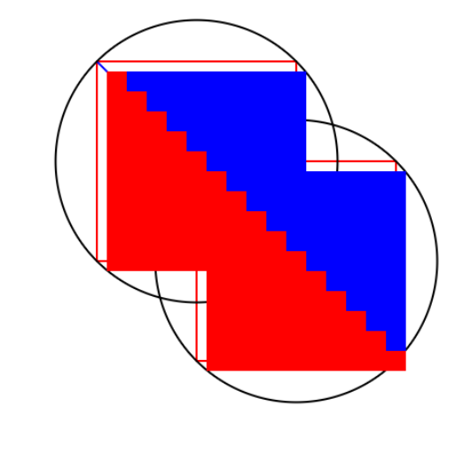

HW 1 Exam <<
Previous Next >> w11_hw
w13_hw
1.原圖
從瀏覽器匯入html
從瀏覽器匯入文件為 doc
從瀏覽器導入視窗
# 利用 html 建立 canvas 元素
畫布= html.CANVAS（寬度= 400，高度= 400）
brython_div = doc["brython_div1"]
brython_div <= 畫布
# 取得畫布的地形上下文
ctx = canvas.getContext("2d")
# 第一個初始化的起始點
x1, y1 = 0, 0
#第二個胡蘿蔔的左上角
x2, y2 = 100, 100
size = 200 # 托盤的大小
# 同等第一個托盤
ctx.lineWidth = 2
ctx.StrongStyle = '紅色'
ctx.beginPath()
ctx.rect(x1, y1, 大小, 大小)
ctx. 中風()
# 鄰近第二個托盤
ctx.beginPath()
ctx.rect(x2, y2, 大小, 大小)
ctx. 中風()
# 建立一個隱藏的快速顯著功能表
context_menu = html.DIV(id="context-menu", style={"display": "none", "position": "absolute", "background": "lightgray", "border": "1px Solid Black" ，「填充」：「5px」}）
context_menu <= html.BUTTON("選項 1")
context_menu <= html.BUTTON("選項 2")
context_menu <= html.BUTTON("選項 3")
文檔 <= 上下文選單
# 監聽右鍵點選事件顯示快顯功能表
def show_context_menu（事件）：
event.preventDefault() # 阻止預設右鍵選單顯示
context_menu.style.display = "區塊"
context_menu.style.left = f"{event.pageX}px"
context_menu.style.top = f"{event.pageY}px"
# 右鍵監聽點擊
canvas.bind("contextmenu", show_context_menu)
#監聽文件的點擊事件，點擊其他地方時隱藏快顯功能表
def hide_context_menu（事件）：
context_menu.style.display = "無"
#監聽文檔點擊事件
doc.bind("點", hide_context_menu)

2.塗色
from browser import html, document as doc, window
# Create canvas element
canvas = html.CANVAS(width=500, height=500) # Increase canvas size to ensure circles are fully visible
brython_div = doc["brython_div1"]
brython_div <= canvas
# Get the drawing context of the canvas
ctx = canvas.getContext("2d")
# Draw the first empty square at (50, 50)
width = 10
height = 10
gs = 20 # Grid size (for spacing)
ctx.lineWidth = 2
ctx.strokeStyle = 'red' # Color for the first square
ctx.beginPath()
ctx.rect(50, 50, width * gs, height * gs) # Draw a hollow square with offset (50, 50)
ctx.stroke()
# Draw a blue diagonal line inside the first square
ctx.strokeStyle = 'blue' # Set line color to blue
ctx.beginPath()
ctx.moveTo(50, 50) # Starting point: top-left corner of the square
ctx.lineTo(50 + width * gs, 50 + height * gs) # Ending point: bottom-right corner of the square
ctx.stroke()
# Draw the second empty square at (150, 150)
offset_x = 150 # Change the x-coordinate to give more space
offset_y = 150 # Change the y-coordinate to give more space
width2 = 10
height2 = 10
ctx.lineWidth = 2
ctx.strokeStyle = 'red' # Color for the second square
ctx.beginPath()
ctx.rect(offset_x, offset_y, width2 * gs, height2 * gs) # Draw another hollow square
ctx.stroke()
# Function to draw a circle around a square
def draw_outer_circle(x, y, width, height):
# Calculate the radius of the outer circle (half of the diagonal of the square)
radius = window.Math.sqrt(width ** 2 + height ** 2) / 2
# Calculate the center of the square
center_x = x + width * gs / 2
center_y = y + height * gs / 2
# Draw the outer circle
ctx.beginPath()
ctx.arc(center_x, center_y, radius * gs, 0, 2 * window.Math.PI)
ctx.strokeStyle = 'black' # Color for the outer circle
ctx.lineWidth = 2
ctx.stroke()
# Draw outer circles around both squares
draw_outer_circle(50, 50, width, height) # For the first square
draw_outer_circle(offset_x, offset_y, width2, height2) # For the second square
# Function to fill colors in each region based on the location
def fill_regions():
# Iterate through the entire canvas and fill regions based on their coordinates
for x in range(0, canvas.width, gs):
for y in range(0, canvas.height, gs):
# Check which region the (x, y) point falls into
# For the first square (50, 50)
if 50 <= x <= 50 + width * gs and 50 <= y <= 50 + height * gs: # Inside the first square
# Fill the region based on its position relative to the diagonal
if y < x: # Above the diagonal line inside the first square
ctx.fillStyle = 'blue' # Color the region above the diagonal
ctx.fillRect(x, y, gs, gs)
elif y >= x: # Below the diagonal line inside the first square
ctx.fillStyle = 'red' # Color the region below the diagonal
ctx.fillRect(x, y, gs, gs)
# For the second square (150, 150)
elif offset_x <= x <= offset_x + width2 * gs and offset_y <= y <= offset_y + height2 * gs: # Inside the second square
# Similar check for the second square
if y < x: # Above the diagonal line inside the second square
ctx.fillStyle = 'blue' # Color the region above the diagonal
ctx.fillRect(x, y, gs, gs)
elif y >= x: # Below the diagonal line inside the second square
ctx.fillStyle = 'red' # Color the region below the diagonal
ctx.fillRect(x, y, gs, gs)
# Call the function to fill the regions
fill_regions()

HW 1 Exam <<
Previous Next >> w11_hw